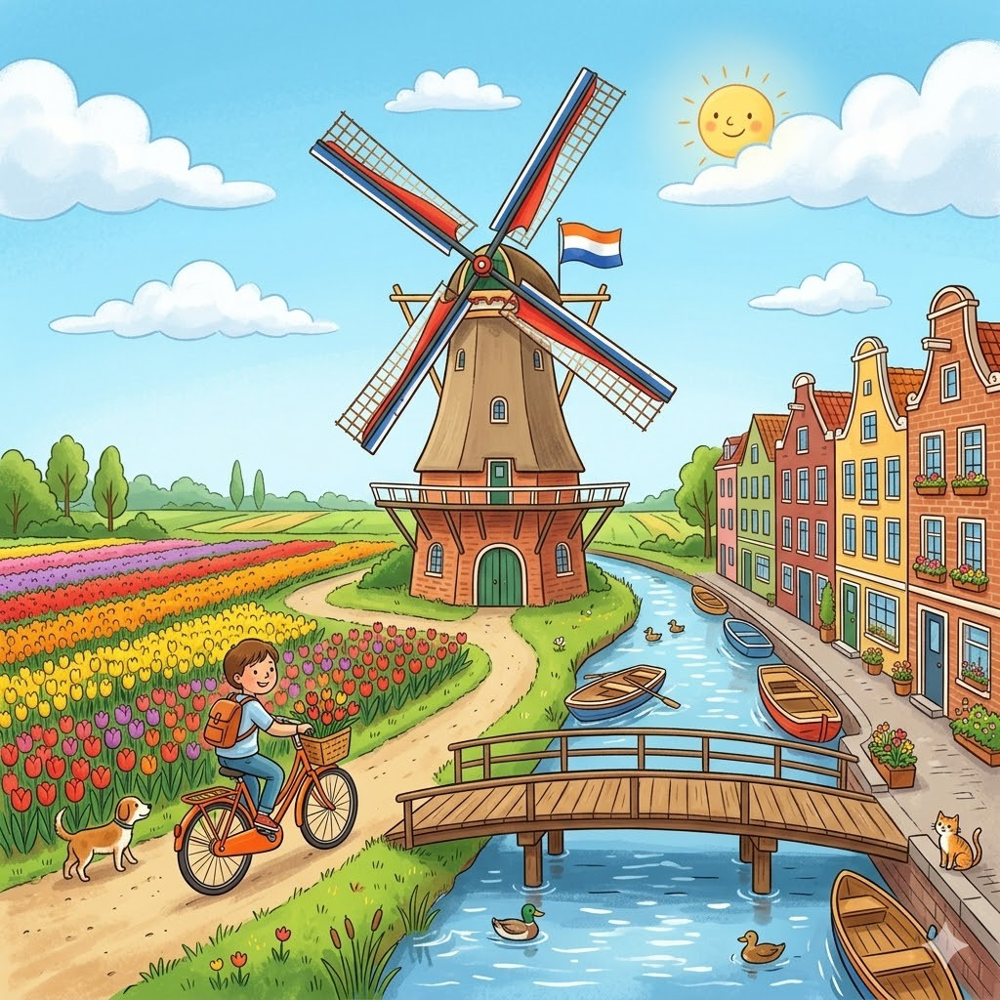
Hier stehen die wichtigsten Daten zu deinem Land. In der App baust du daraus deinen eigenen Steckbrief.
| Hauptstadt | Amsterdam |
| Kontinent | Europa |
| Sprache | Niederländisch |
| Währung | Euro |
| Einwohner | rund 18 Millionen Menschen |
| Fläche | etwa 42.000 km², also viel kleiner als Deutschland |
| Großer Berg | Der höchste Punkt heißt Vaalserberg und ist nur 322 Meter hoch |
| Nachbarländer | Deutschland und Belgien |
In Niederlande gibt es viele berühmte Orte. Diese vier solltest du kennen.
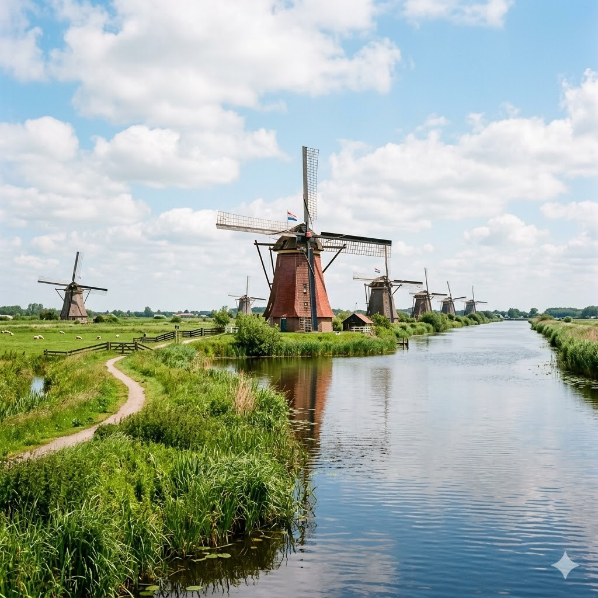
WindmühlenIn den Niederlanden stehen viele alte Windmühlen. Früher haben sie mit dem Wind Korn gemahlen. Andere haben Wasser vom Land ins Meer gepumpt. Heute sind die Windmühlen ein beliebtes Fotomotiv.
Grüne Wörter für die Appalte Windmühlenmit dem WindKorn gemahlenWasserFotomotiv
Grachten von AmsterdamIn Amsterdam gibt es viele kleine Wasserstraßen. Diese nennt man Grachten. An den Grachten stehen schmale, hohe Häuser. Mit dem Boot kann man durch die Stadt fahren.
Grüne Wörter für die AppIn Amsterdamkleine WasserstraßenGrachtenschmale, hohe HäuserMit dem Boot
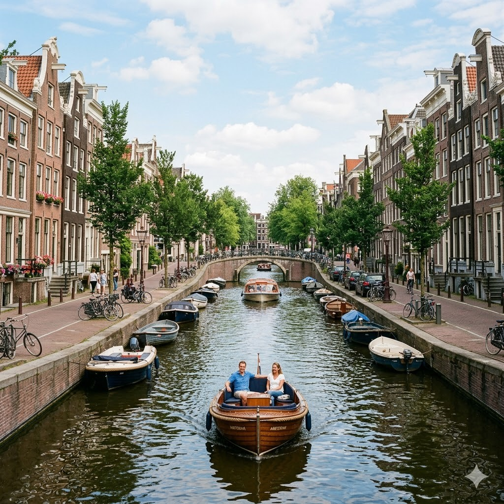
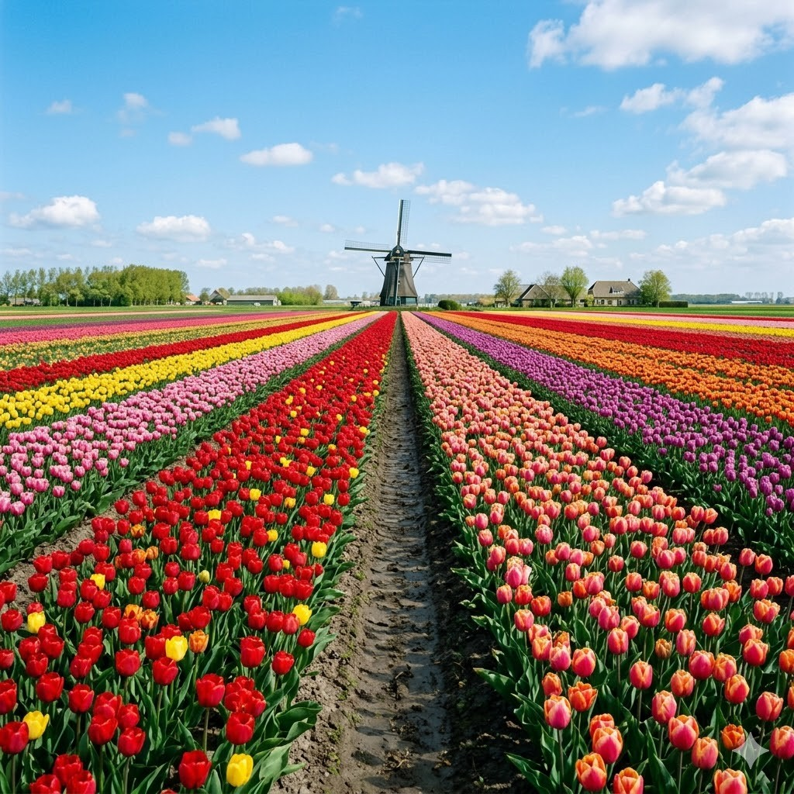
TulpenfelderIm Frühling blühen in den Niederlanden riesige Tulpenfelder. Sie leuchten in rot, gelb und vielen anderen Farben. Die Blumen stehen in langen Reihen nebeneinander. Aus aller Welt kommen Menschen, um die Tulpen zu sehen.
Grüne Wörter für die AppIm FrühlingTulpenfeldergelblangen Reihendie Tulpen
KäsemarktIn manchen Städten gibt es einen großen Käsemarkt. Dort liegen viele runde Käselaibe auf dem Platz. Männer tragen den Käse auf hölzernen Tragen. Der Gouda ist ein bekannter Käse aus den Niederlanden.
Grüne Wörter für die Appeinen großen Käsemarktrunde Käselaibeauf dem Platzhölzernen TragenGouda
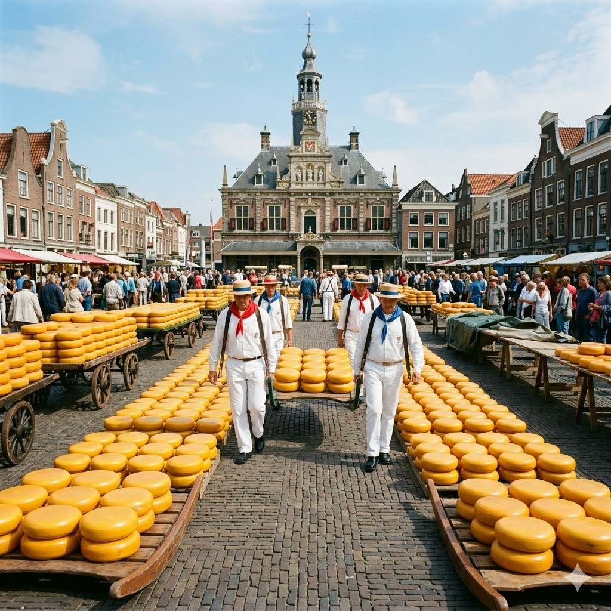
Diese Tiere leben in Niederlande und sind ganz besonders.
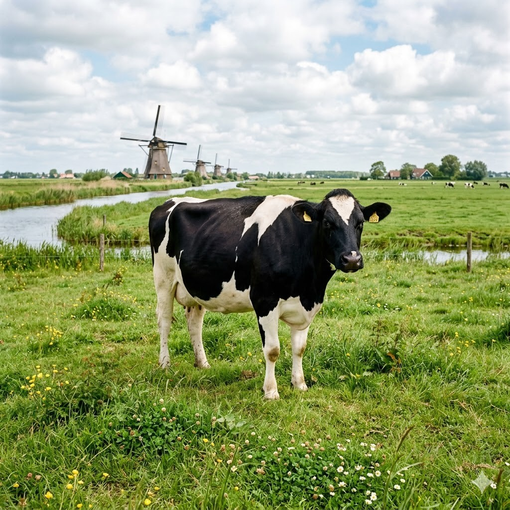
Friesische KuhAuf den grünen Wiesen stehen viele schwarz-weiße Kühe. Diese Kühe geben besonders viel Milch. Aus der Milch macht man Käse und Butter. Die schwarz-weiße Kuh ist typisch für die Niederlande.
Grüne Wörter für die Appgrünen Wiesenschwarz-weiße Küheviel MilchKäse und Buttertypisch
SeehundIm Wattenmeer an der Küste leben viele Seehunde. Bei Ebbe liegen sie gern auf den Sandbänken. Sie sind sehr gute Schwimmer und tauchen nach Fisch. Vom Boot aus kann man die Seehunde beobachten.
Grüne Wörter für die AppIm Wattenmeeran der Küsteauf den Sandbänkennach Fischbeobachten
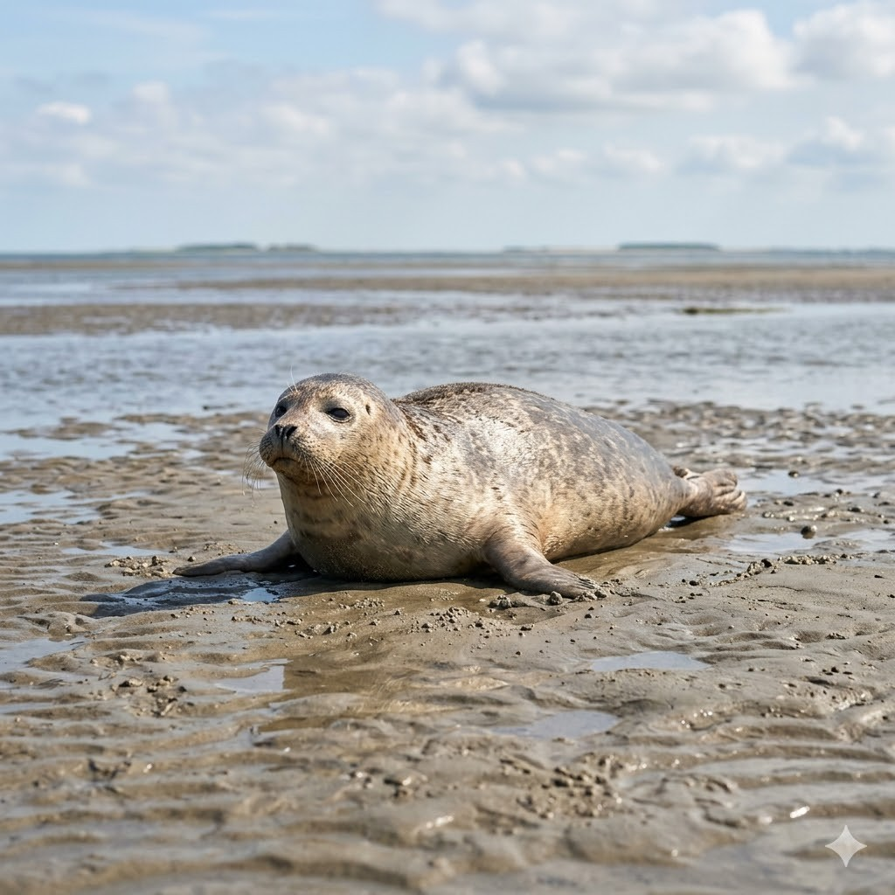
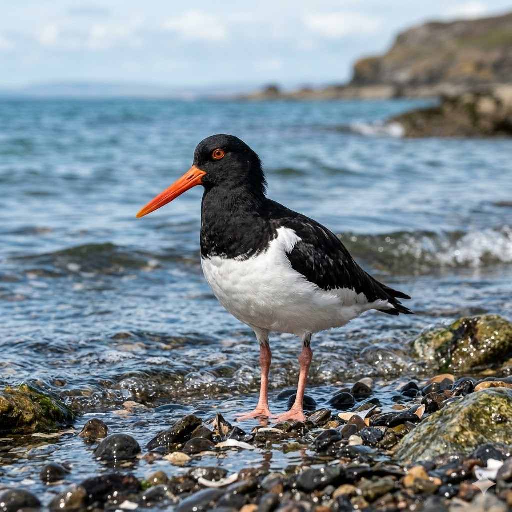
AusternfischerDer Austernfischer ist ein schwarz-weißer Vogel. Er hat einen langen roten Schnabel und rote Beine. Mit dem Schnabel sucht er im Watt nach Muscheln und Würmern. Man hört ihn oft laut rufen.
Grüne Wörter für die Appschwarz-weißer Vogelroten Schnabelrote Beinenach Muschelnlaut rufen
In der App kannst du beim Essen das Foto nehmen oder dein Gericht selbst malen.
Gouda-KäseGouda ist ein bekannter Käse aus den Niederlanden. Er wird in großen runden Laiben gemacht. Junger Gouda schmeckt mild, alter Gouda kräftig. Viele Kinder essen ihn gern auf dem Brot.
Grüne Wörter für die Appbekannter Käserunden Laibenschmeckt mildalter Goudaauf dem Brot
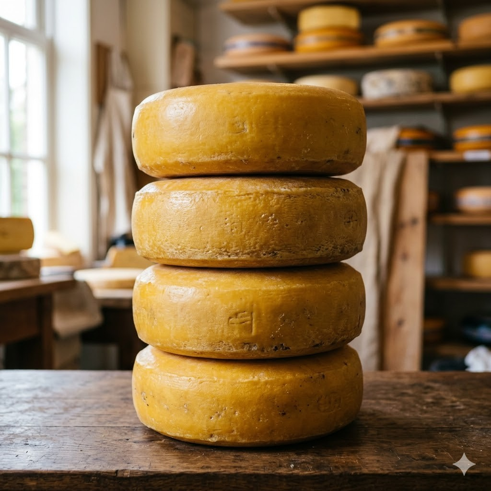
StroopwafelEine Stroopwafel ist eine dünne, runde Waffel. In der Mitte steckt klebriger Sirup. Man legt sie gern auf eine warme Tasse Tee. Dann wird der Sirup weich und schmeckt noch besser.
Grüne Wörter für die Appdünne, runde Waffelklebriger Sirupeine warme Tasseder Sirup weichschmeckt
PoffertjesPoffertjes sind viele kleine dicke Pfannkuchen. Sie werden in einer Pfanne mit Mulden gebacken. Oben kommt Puderzucker und ein Stück Butter darauf. Man isst sie warm vom Jahrmarkt oder zu Hause.
Grüne Wörter für die Appkleine dicke Pfannkucheneiner PfannePuderzuckerStück Buttervom Jahrmarkt
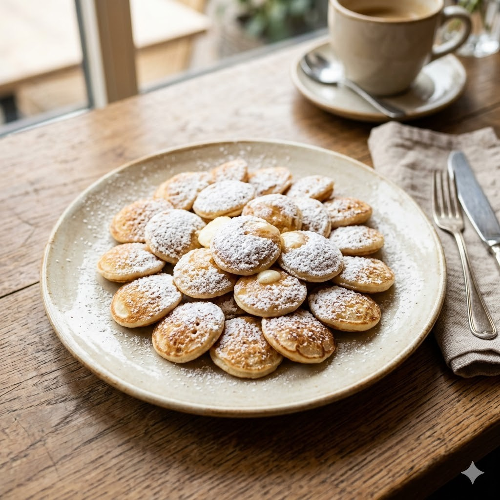
⚽ Gut zu wissen
Die Nationalmannschaft der Niederlande nennt man Oranje. Das bedeutet orange, die Farbe vom Königshaus. Die Spieler tragen darum ein oranges Trikot. Berühmt war früher der Spieler Johan Cruyff. Die Niederlande waren schon oft im großen Finale.
Grüne Wörter für die AppOranjebedeutet orangeoranges TrikotJohan Cruyffim großen Finale
🌟 Profi-Wissen
Virgil van Dijk ist Hollands bekanntester Spieler heute. Er ist Innenverteidiger beim FC Liverpool und gilt als einer der besten Verteidiger der Welt. Früher war Johan Cruyff die größte Legende der Niederlande. Er erfand den Fußball-Stil mit vielen kurzen Pässen.
Grüne Wörter für die AppVirgil van DijkFC LiverpoolJohan Cruyff LegendeOranjevan Basten Legende
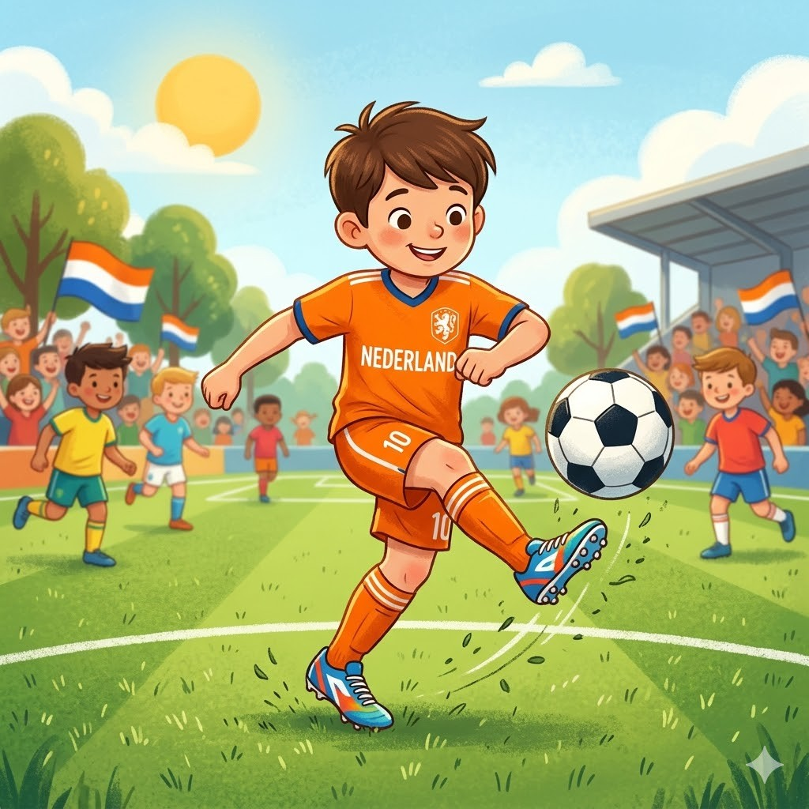
Mit dem Fahrrad zur SchuleIn den Niederlanden fahren fast alle mit dem Fahrrad. Es gibt überall breite und sichere Radwege. Die Kinder fahren jeden Morgen mit dem Rad zur Schule. Weil das Land flach ist, geht das ganz leicht.
Grüne Wörter für die Appmit dem Fahrradsichere Radwegejeden Morgenzur Schuleflach
KoningsdagAm Koningsdag feiern die Niederländer den Geburtstag des Königs. An diesem Tag ziehen sich alle orange an. In den Straßen gibt es Musik, Spiele und kleine Flohmärkte. Die Kinder verkaufen dort ihr altes Spielzeug.
Grüne Wörter für die Appden Geburtstagdes Königsorange ankleine Flohmärktealtes Spielzeug
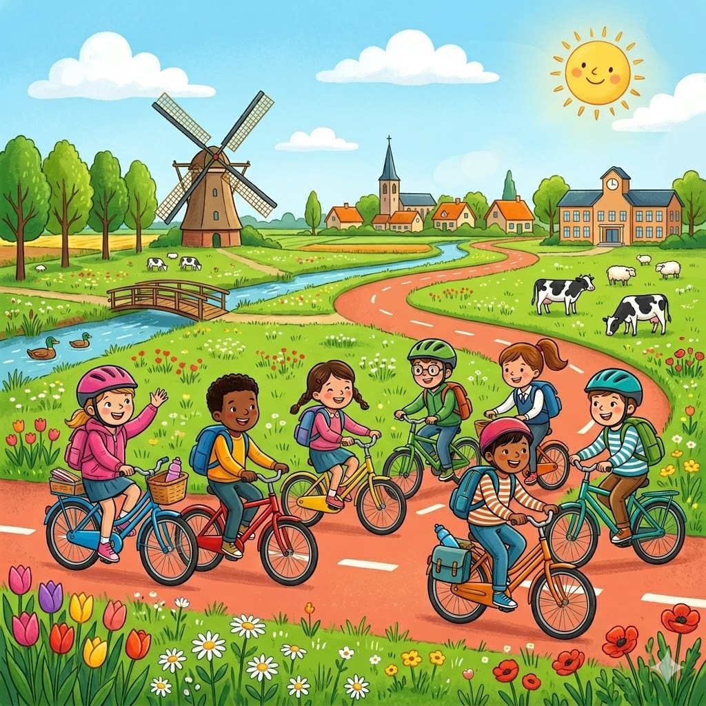